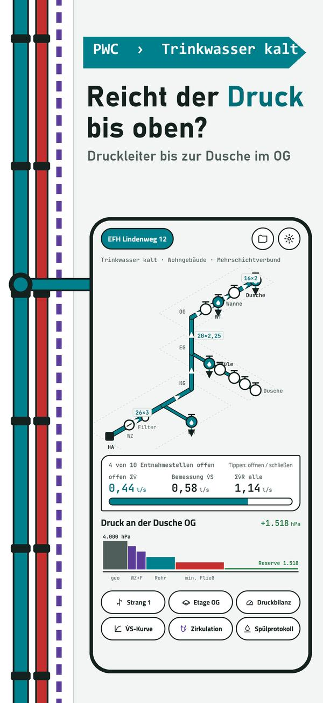
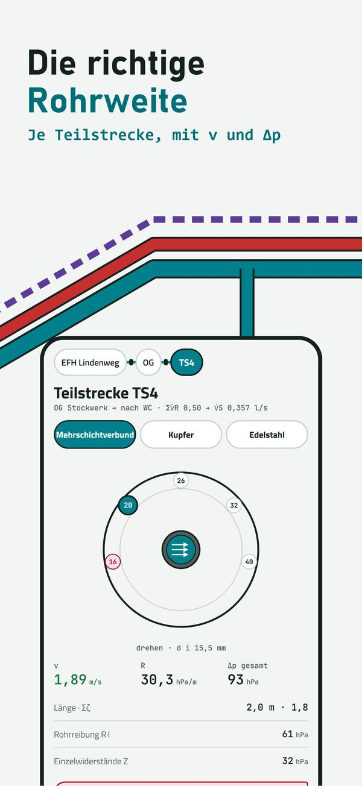
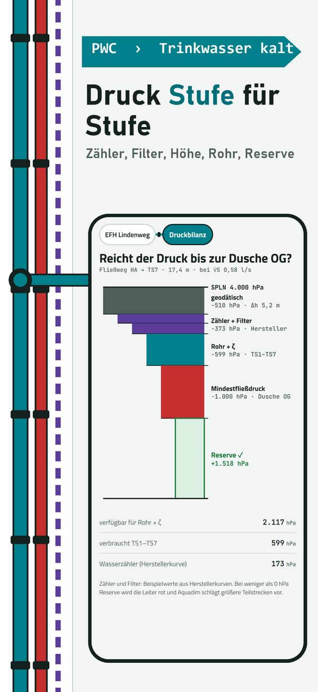

Aquadim – Trinkwasserleitung
Rohrweite und Druck für SHK
Aquadim dimensioniert Trinkwasserleitungen in Wohngebäuden. Sie legen das Gebäude als Baum an – Strang, Etage, Entnahmestelle – und sehen das Strangschema isometrisch. Aus den Volumenströmen der Entnahmestellen wird der Spitzenvolumenstrom, daraus je Teilstrecke Rohrweite, Fließgeschwindigkeit und Druckverlust. Die Druckleiter zeigt, was vom Versorgungsdruck an der ungünstigsten Stelle übrig bleibt.



- Gebäude als Baum: Strang, Etage, Entnahmestelle, mit Pfad oben
- Isometrisches Strangschema mit Hähnen zum Öffnen und Schließen
- Spitzenvolumenstrom aus der Summe aller Zapfstellen, mit Kurve
- Rohrweite je Teilstrecke mit Geschwindigkeit und Druckverlust
- Druckleiter vom Versorgungsdruck bis zur Reserve am kritischen Punkt
- Mehrschichtverbund, Kupfer und Edelstahl mit Innendurchmessern
- Warmwasser und Zirkulation mit Volumenstrom
- Spülprotokoll je Abschnitt und PDF-Bericht direkt auf dem iPhone
Im App Store ladenHilfe · Datenschutz